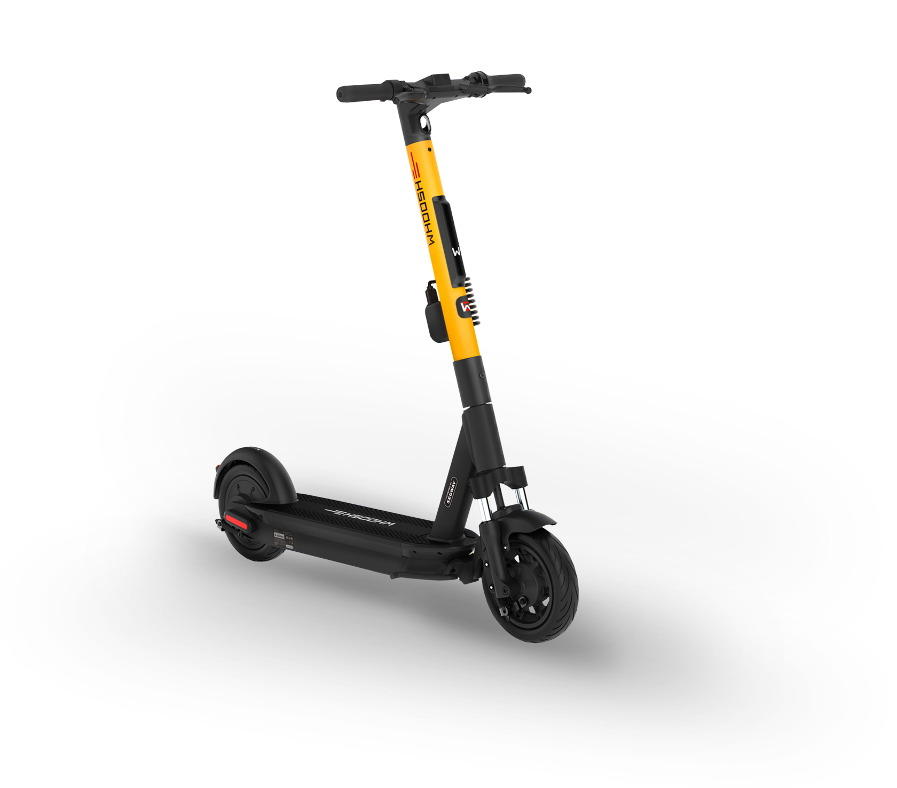

Безопасность
Маршрурты
Эстетика
Проект поиска лучшего пути по разным метрикам для электросамокатов и анализа его ETA.
На данном сайте представлен прототип решения для Хакатона Whoosh Mobility Hack в котором команда "Боком на КИКе" заняла 1 место. Мы(команда "Боком на КИКе") должны были решить проблему построения безопасных и эстетически насыщенных маршрутов для электросамокатов.
Решение заключается в выявление разных типов маршрутов(Безопасный, Красивый, Быстрый, Исторический) и нахождение соотвествующих данных, что могут служить метриками для них. Например, для безопасного маршрута использовалась карта высот с предпосылкой, что большой перепад высот может негативно сказаться на безопасности пути.
Состав команды: студенты ИТКН НИТУ «МИСиС» Владислав Тишин, Петер Ибрагимов, Арсений Иванов, Георгий Бондарь и выпускник университета Вадим Порватов.
Ниже вы можете протестировать сам алгоритм. Выберете 2 точки на карте и по ним построиться 7 маршрутов, слева от карты находится легенда. Нажимая на кнопки можно подсветить интересующий вас маршрут. Прототип работает только в Москве в пределах МКАД.